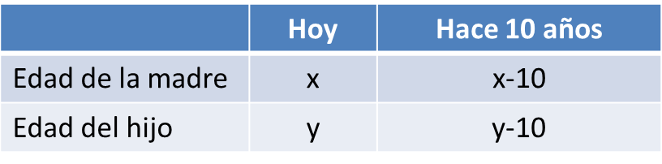

Problemas
1. He pagado 7,80€ por 2 bolis y 3 cuadernos. El otro día, pagué 13,20€ por 5 bolis y 4 cuadernos. ¿Cuánto cuesta cada boli? ¿Y cada cuaderno
un boli cuesta x €, un cuaderno cuesta y €
Un boli cuesta 1,20 € y el cuaderno 1,80 €
2. La suma de las edades de una madre y su hijo es 56. Hace 10 años, la edad de la madre era cinco veces la del hijo. ¿Qué edad tienen?

La madre tiene 40 años y el hijo 16
Ejercicios. Resuelve los siguientes problemas:
1.- Un librero vendió 45 libros la semana pasada, algunos a 32 € y otros a 28 €. Si recaudó 1368 €, ¿cuántos libros vendió de cada tipo?
2.- Queremos mezclar aceite de oliva a 3,5 €/l con aceite de girasol a 2 €/l, para obtener 50 l de mezcla a 3,08 €/l. Calcula cuantos litros de cada clase debemos mezclar.
3.- Si restamos un número de dos cifras del número que resulta al intecambiarlas, la diferencia es dos veces la cifra de las decenas del número inicial. Calcula el número sabiendo que las suma de sus cifras es 16.
Soluciones: 1) 27 a 32 € y 18 a 28 €; 2) 36 l de aceite de oliva y 14 l de acite de girasol; 3) 97
Obra publicada con Licencia Creative Commons Reconocimiento No comercial Compartir igual 4.0